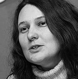
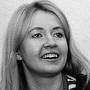
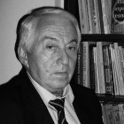
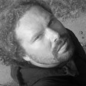
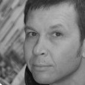
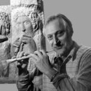
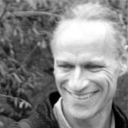

Друга подія TEDx в Україні«Краса розуму: ідеї для України»відбулась 24 квітня 2010 року в Києві в Будункувчителя. Вона зібрала 18 виступаючих, 162 людини в аудиторії та 224 глядача веб-трансляції.
Программа Події
-

ТемаПраво власності в Україні: поточний стан та перспективи
Тетяна Монтян
-

ТемаПро смаки і їхнє формування
Тетяна Микитенко
-

ТемаШкільна геометрія – панацея для освіти
Ісаак Кушнір
-

ТемаОрганічна архітектура як відображення життя, свободи, реалізації
Гліб Усаковський
-

ТемаПро Renewable Energy та 3 простих аксіоми виживання
Дмитро Зоц
-

ТемаМистецтво бачити. І творити красу життя
Олександр Агафонов
-

ТемаNever give up!
Bear Stauss
-
Тетяна Монтянюрист, мати 4-х дітей
Вона відома як адвокат у багатьохрезонансних справах, творецьнайкращогоколективного блогу України по версіїBestUkrainianBlogAwards 2008 — ІнфоПорн, — учасникбагатьох он-лайн та офф-лайннавколополітичнихсутичок. У своїхстаттях вона не боїтьсядосліджувати і розкриватинайбільші вади і недолікиукраїнськогосуспільства, щопроявляються, починаючи з самого низькогопобутовогорівня.
Тема спічаПраво власності в Україні: поточний стан та перспективи
-
Тетяна Микитенкоактивний учасник Інтернет-життя
Крім свого ЖЖ, який є досить популярним у Інтернет-спільноті, вона створила блог ragu.li, що висвітлює несмак української еліти, а також займається соціально корисним сайтом «Читанка», на якому збирає найкращі дитячі книжки.
Тема спічаПро смаки і їхнє формування
-
Ісаак Аркад’євич Кушнірзаслужений вчитель України, двічі лауреат конкурсу «Соросовський вчитель», автор 52 книжок з математики, автор задач єдиної в Україні Геометричної олімпіади.
Тема спічаШкільна геометрія – панацея для освіти
-
Гліб Усаковський
Головний архітектор майстерні «Органічна Архітектура», учень відомих європейських архітекторів Луїджі Ф’юмара та Райнханда Коппенрата. Архітектурні об’єкти Гліба знаходяться в Україні, Перу, Німеччині. Він спрямовує зусилля на формування спільноти органічних архітекторів в Україні. Одна з мрій Гліба — створити дитячий садок, який би сприяв розкриттю потенціалу окремої дитини на кожному етапі розвитку.
Тема спічаОрганічна архітектура як відображення життя, свободи, реалізації
-
Дмитро Зоцпродюсер, експерт з брендінгу у сфері медіа та комунікацій.
Дмитро побудував Reuters в Україні, керував промо-кампанією «1+1 ти не один», зміною формату телеканалу «Інтер», працював 5 років продюсером в Канаді, запустив журнал «Експерт», вів кампанію із зовнішніх комунікацій EastOne.
Тема спічаПро Renewable Energy та 3 простих аксіоми виживання
-
Олександр Агафоновхудожник
Олександр працює у багатьох формах: у графіці, живопису, скульптурі, він автор оригінальних проектів фонтанів та ювелірних виробів. Своїми вчителями вважає: Ботічеллі, Ван Гога, Чимабуэ, Джотто. Твори Агафонова експонувалися у Бельгії, Австрії, Франції, Україні.
Тема спічаМистецтво бачити. І творити красу життя
-
Bear Staussabstract artist
Bear Stauss is an abstract artist of the mind who has found his calling, for the past 34 years, in world travel and attempting to define cultural integrity by experiencing and immersing into global cultures to seek answers that are rarely and not easily obtainable. This lifetime study has provided an insightful view into life’s lesser explored corners. He calls the world his home, and is occasionally spotted in Ukraine, Costa Rica and other countries across the globe. He is known to make himself available to curiosity seekers who share similar interests, and at times with those who don’t.
Тема спічаNever give up!